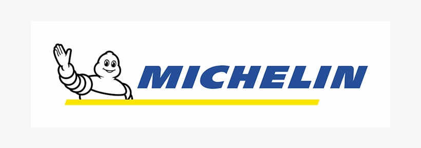
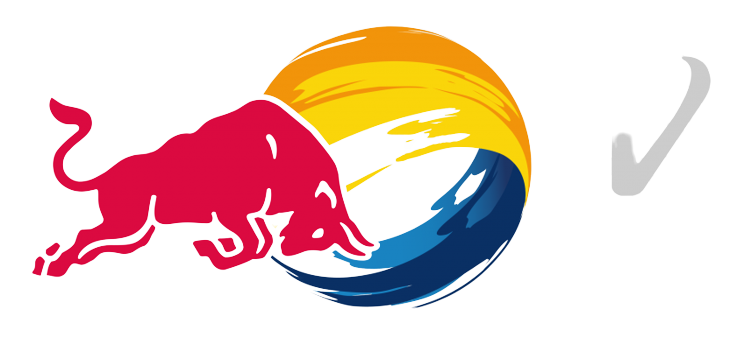
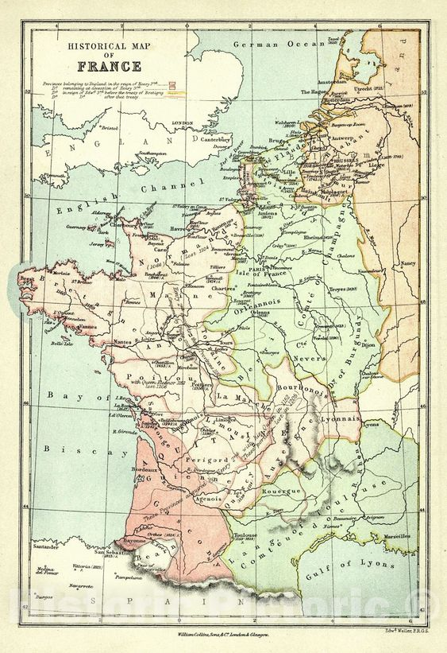
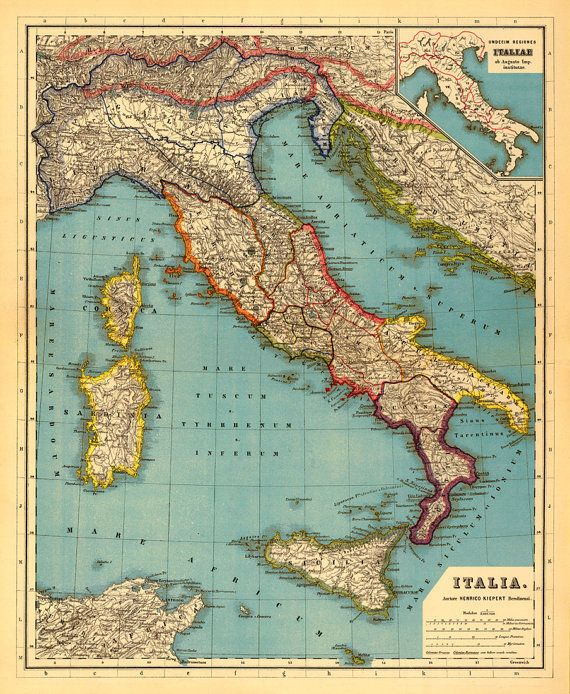
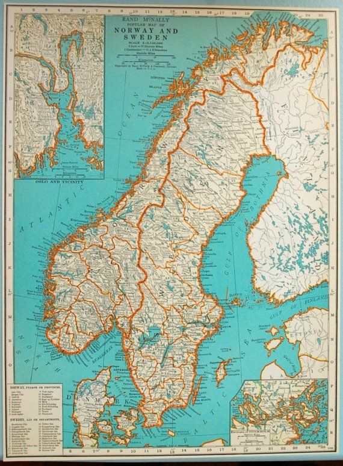
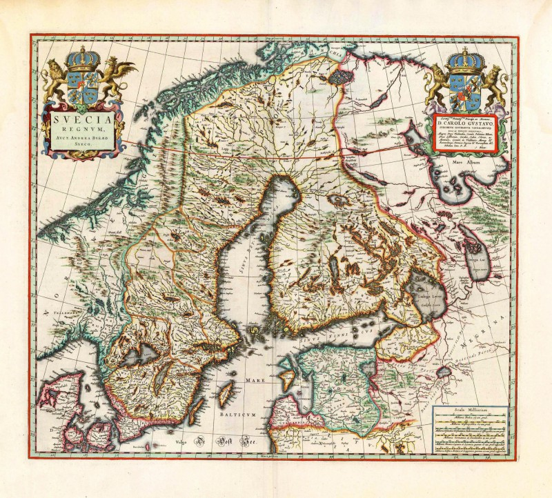
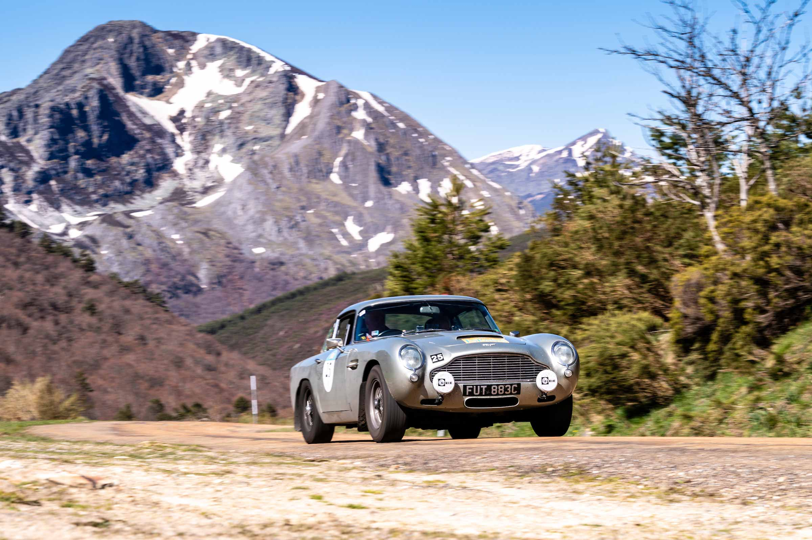
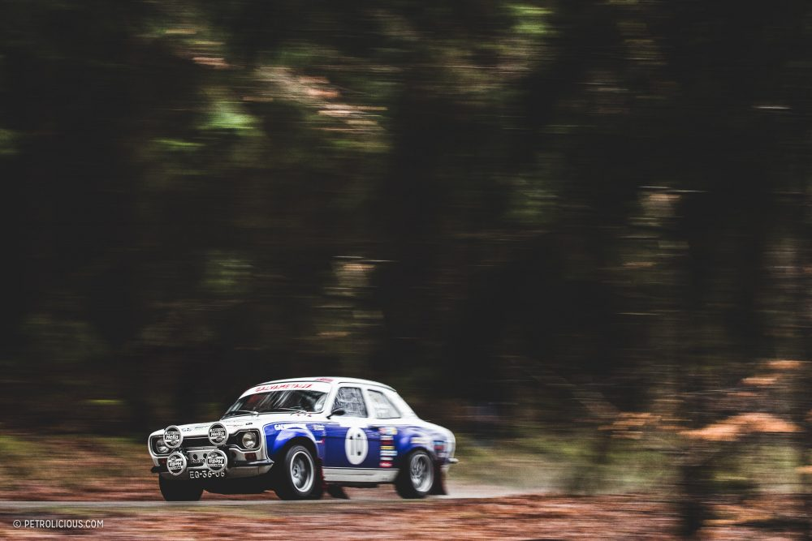
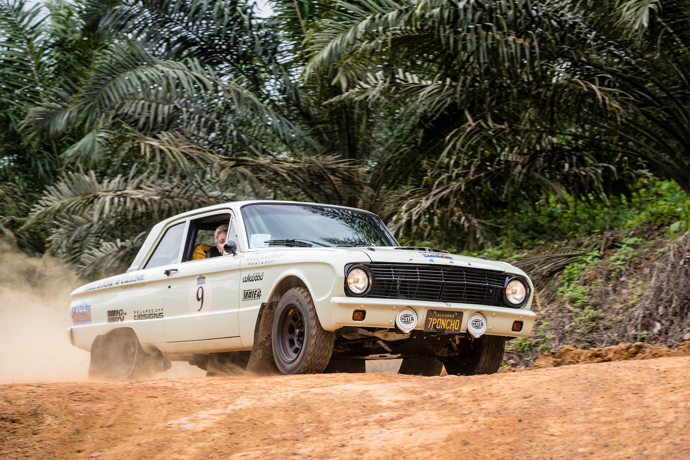
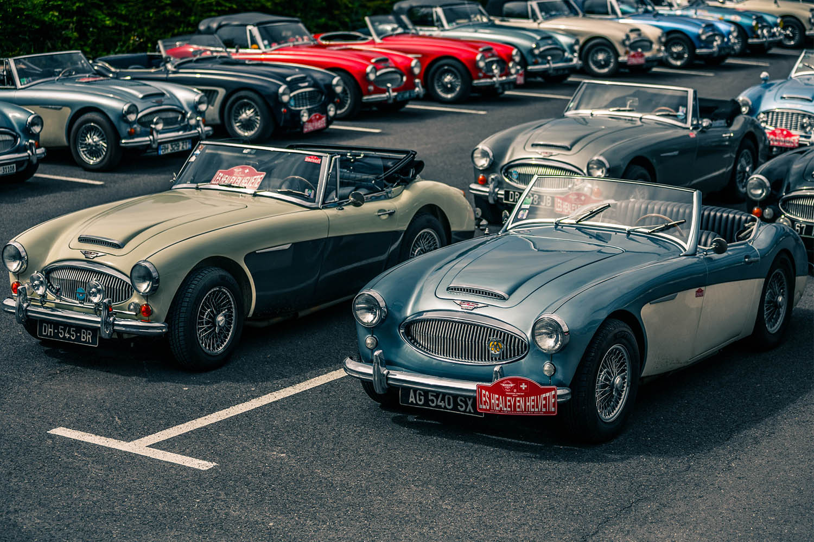

Rally racing quickly spread across the Europe. Motorsport fans could soon enjoy car racing in France, England, Italy and Germany. However, due to World War I rally race was suspended and was only revitalized in Monte Carlo in 1924. Except for World War II, the Monte Carlo rally was held annually and became one of the rounds of the World Rally Championship.1950’s is considered as revitalization and golden era for rally sport. New rally championships were started to organize across the whole Europe. First European Rally Championship was held in 1953, but due to high number of accidents on public roads, rally race was banned in most western European countries. Rally was then moved to Sweden and Finland, where it maintained very popular until these days. Scandinavian racers were able to drive in unpopulated areas and gravel roads. Northern Europe became home of modern rally.

some truly stunning classic cars in the
breath-taking scenery of the South of France.

the most beautiful international rally to the discovery of the hidden beauties of Italy

Vintage car rally Oslo, Norway Visit Oslo, Scandinavian Countries, Natural Resources, Rally.

Smooth and blisteringly quick gravel roads, buried among forests and lakes, characterised by massive stomach-churning jumps.





